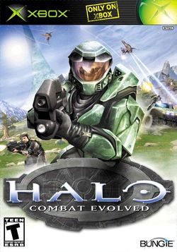
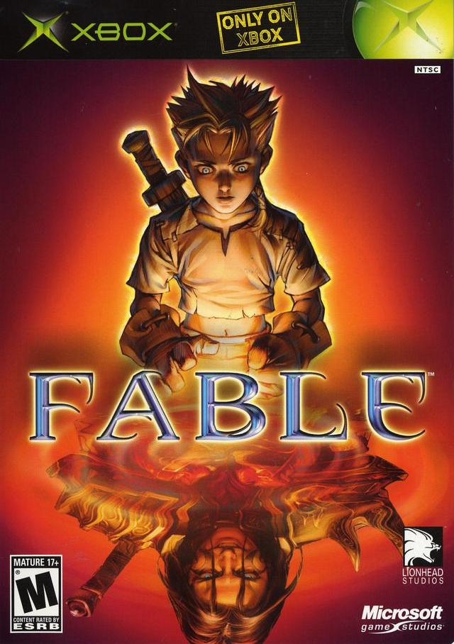
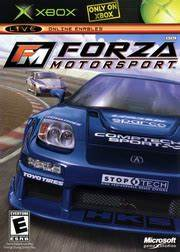
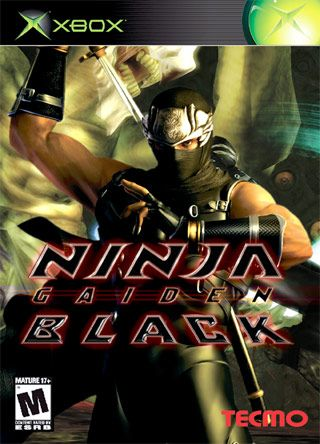

O Xbox original foi lançado pela Microsoft em 15 de Novembro de 2001 na América do Norte. A ideia para criar o Xbox surgiu em 1995, quando a Microsoft desenvolveu uma ferramenta tecnológica chamada DirectX, que ajudava na criação de jogos para Windows.
Em 1998, uma equipe de desenvolvedores da Microsoft, liderada por Kevin Bachus, Seamus Blackley, Ted Hase e o líder do DirectX, Otto Berkes, começou a trabalhar em um protótipo de console de videogame. O nome original do protótipo era API DirectX Box, mas foi encurtado para Xbox para torná-lo mais popular, apesar do descontentamento da equipe de marketing que tinha outras sugestões de nomes.
O Xbox foi apresentado ao mundo por Bill Gates e o ator Dwayne Johnson, conhecido como The Rock, no ano de 2000 durante a CDG. O console prometia ter o melhor hardware da época e poderia ser usado como um complemento para computadores.
O objetivo do Xbox era competir com o PSOne da Sony, que estava no mercado desde 1995, e com o PlayStation 2, lançado em 2000. Ele também visava competir com a Nintendo e a Sega, que dominavam uma boa parte do mercado de games na época.
O Xbox original teve grande sucesso, vendendo mais de 1 milhão de unidades nas primeiras três semanas após o lançamento.
|  |  |  |  |